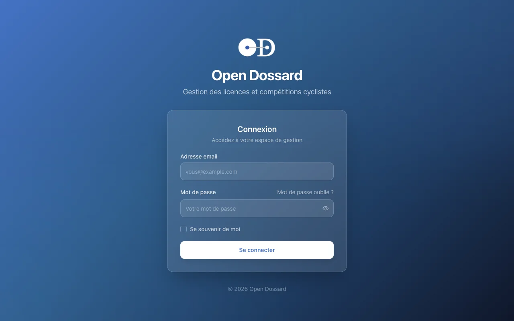
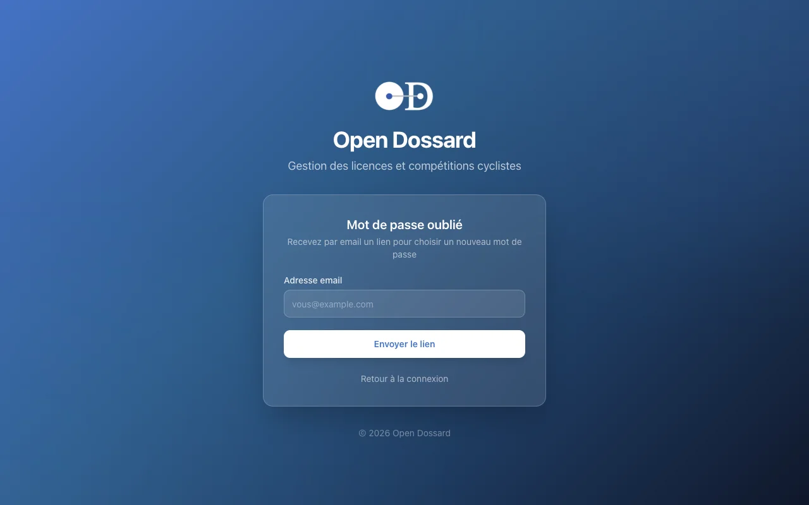
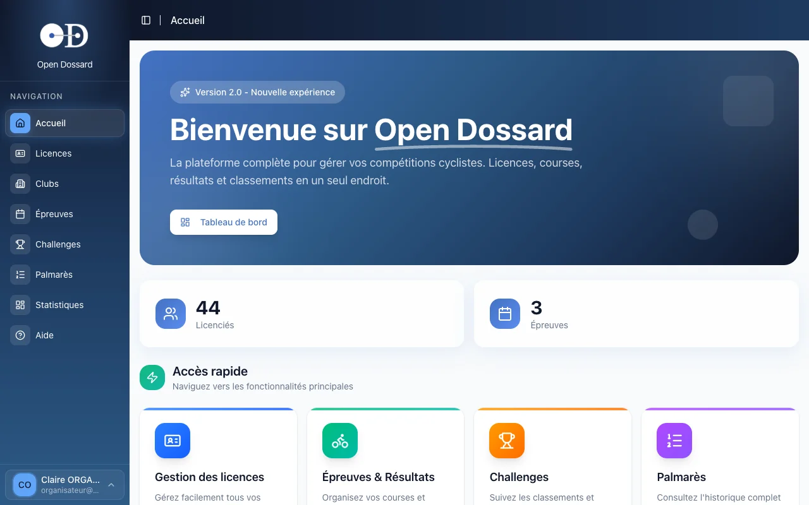
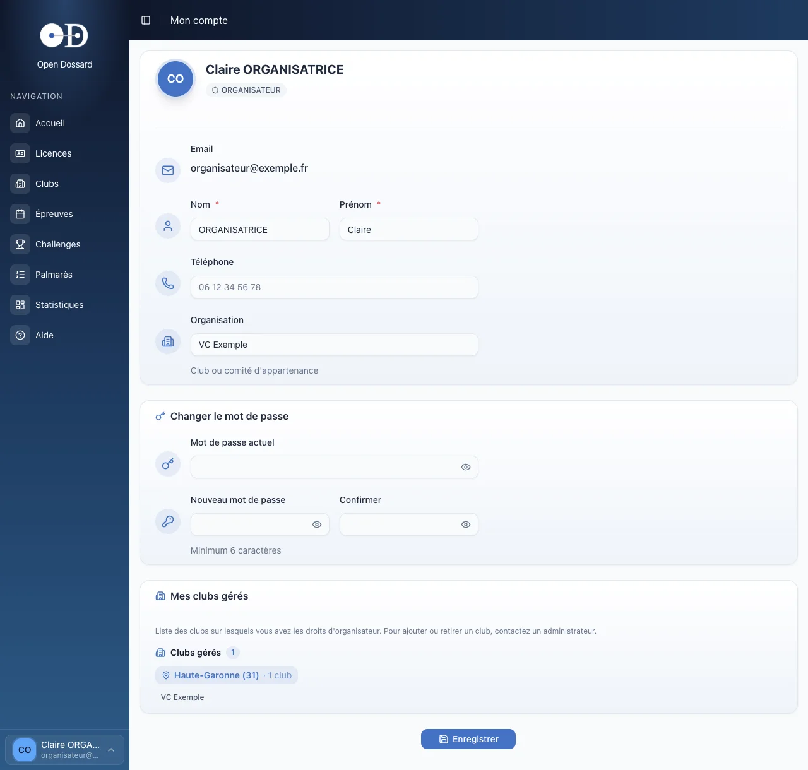

- • Votre compte est créé par un administrateur Open Dossard, qui le rattache à votre ou vos clubs.
- • Vous vous connectez sur app.opendossard.com avec votre adresse email et votre mot de passe.
- • Mot de passe perdu ? Un lien de réinitialisation vous est envoyé par email.
Obtenir un compte
Les comptes organisateurs ne se créent pas en libre-service : ils sont ouverts par l'équipe Open Dossard. Écrivez à help@dossardeur.com en précisant :
- vos nom et prénom ;
- votre adresse email personnelle, qui vous servira d'identifiant (pas d'adresse générique du club du type contact@ ou info@) ;
- votre numéro de téléphone portable, qui peut vous être demandé ;
- le ou les clubs pour lesquels vous organisez des épreuves.
Vous recevez ensuite vos accès. Votre compte est rattaché à vos clubs : c'est ce rattachement qui détermine les épreuves que vous pouvez créer et modifier (voir Vos droits).
Un commissaire qui saisit les arrivées n'a pas besoin d'être rattaché au club organisateur. Un compte organisateur suffit, même sans club. Voir Arbitres & commissaires.
Se connecter
- Ouvrez app.opendossard.com dans votre navigateur, sur ordinateur, tablette ou téléphone.
- Saisissez votre adresse email et votre mot de passe.
- Cochez Se souvenir de moi si vous êtes sur votre appareil personnel : vous resterez connecté après la fermeture du navigateur. Sans cette case, la session se termine à la fermeture du navigateur.
- Cliquez sur Se connecter.

Sur l'ordinateur de la salle des fêtes ou du club, ne cochez pas « Se souvenir de moi » et déconnectez-vous en fin de journée depuis le menu en bas à gauche de l'écran.
Mot de passe oublié
- Sur l'écran de connexion, cliquez sur Mot de passe oublié ?.
- Saisissez l'adresse email de votre compte, puis cliquez sur Envoyer le lien.
- Ouvrez l'email reçu et cliquez sur le lien. Pensez à regarder dans vos courriers indésirables.
- Choisissez votre nouveau mot de passe, saisissez-le une seconde fois, puis cliquez sur Enregistrer le mot de passe.
- Reconnectez-vous avec ce nouveau mot de passe.

Le lien reçu par email ne sert qu'une fois et expire au bout d'une heure. Passé ce délai, refaites simplement une demande.
Se repérer dans le back-office
Une fois connecté, vous arrivez sur l'accueil. Le menu de gauche donne accès à toutes les rubriques :
- Licences : la base des coureurs (voir Licenciés) ;
- Clubs : les fiches des clubs (voir Mon club) ;
- Épreuves : vos courses, avec leurs engagements et leurs classements ;
- Challenges et Palmarès : les classements sur plusieurs épreuves et l'historique d'un coureur ;
- Statistiques : le tableau de bord de la saison (voir Statistiques).
- Aide : ouvre ce guide dans un nouvel onglet.

Le bouton en haut à gauche, à côté du titre de la page, replie le menu pour laisser plus de place aux tableaux, pratique sur un petit écran le jour de la course.
Mon compte
Cliquez sur votre nom en bas du menu, puis sur Mon compte. Vous pouvez y :
- corriger votre nom, votre prénom, votre téléphone et votre organisation ;
- changer votre mot de passe : saisissez l'actuel, puis le nouveau deux fois (6 caractères minimum) ;
- consulter la liste de vos clubs gérés.
Cliquez sur Enregistrer en bas de page pour valider vos modifications. L'adresse email, qui sert d'identifiant, ne se modifie pas depuis cet écran.

Vos droits
Votre compte organisateur vous donne deux niveaux d'accès :
- • Modifier la fiche du club
- • Connecter le club à HelloAsso
- • Créer, modifier, dupliquer ou supprimer une épreuve
- • Déposer les circuits GPX
- • Consulter et compléter les licenciés
- • Engager des coureurs
- • Saisir les classements
- • Déclarer les arbitres et commissaires
Les tâches du jour de la course sont donc ouvertes à toute l'équipe présente, même si chacun n'est pas rattaché au club organisateur. En revanche, seul un organisateur du club peut modifier l'épreuve elle-même.
Seul un administrateur peut ajouter ou retirer un club rattaché à votre compte. Écrivez à help@dossardeur.com.